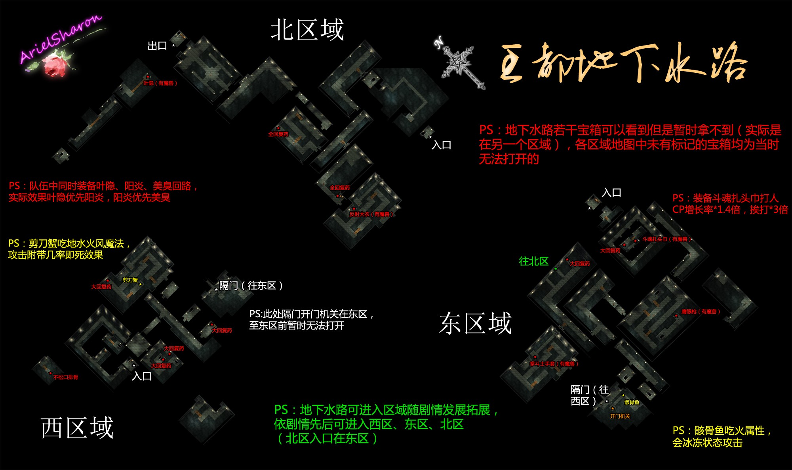

终章 王都缭乱
蔡斯地区
◆主线任务⑴◆给艾莉茜雅女王的传话 BP：10 + 8，20000mira
在协会发生剧情后赶去飞艇坪，同检票处服务员说话后去登机处发生剧情。如果之前完美完成全部主线支线任务则升级为准游击士1级，获得斗魂腰带（战斗时每回合CP+3）。
★【红耀石】此时去艾尔雷登关所与一楼接待住宿的士兵奥塔对话可得到《红耀石》第8卷。
经利塔街道前往圣海姆门。过关所时发生剧情，之后前往王都。
★【红耀石】到达王都前同在格鲁纳门2楼南边城墙上巡逻的士兵塞维安对话可得到《红耀石》第9卷。
{kind=link}
{kind=link}
☆【料理手册】此时可购买的料理：豪华薄饼、皇家薄饼、奶酪薄饼（南街区入口处东边薄饼摊），咖啡冰淇淋、苹果冰淇淋、橙子冰淇淋（南街区入口处西边冰淇淋摊，西街区冰淇淋摊），劲霸浓鱼汤（南街区阳光铃铛酒廊，大盘料理），混合鸡尾酒、香草派（南街区阳光铃铛酒廊），浓缩咖啡（西区巴拉尔咖啡厅），沙拉三明治（西区巴拉尔咖啡厅），巨匠咖喱饭（西区巴拉尔咖啡厅，大盘料理），特级刨冰（东街区冰淇淋摊）
【利贝尔通讯】然后去东街区的艾德尔百货店可以买到《利贝尔通讯第8号》。
PS:王都超市有卖替身木偶
◆主线剧情◆
到王都协会发生剧情，对话选项介绍信会被拦下来BP+1。之后去东街区格兰竞技场，付1000mira购得门票后去竞技场的2层观众席。剧情后到一楼北侧休息室找游击士4人组。
◆主线任务⑵◆给艾莉茜雅女王的传话②
回协会询问艾南后先去阳光铃铛酒廊，再前往东街区南侧的共和国大使馆（也可先去共和国大使馆再去酒廊），之后去周游道找金。在琥耀石石碑附近解救修女艾伦，之后金入队，众人返回阳光铃铛酒廊。晚上，主角前往北街区的罗恩鲍姆酒店留宿。
◆主线任务⑶◆给艾莉茜雅女王的传话③
第二天准备好后去竞技场。登记后去1楼南边的休息室，与每个人对话后开始比赛（这是空轨惯例，以后就不赘述了）。对手中红头发的雷斯会"持之以恒"，效果为单体复活加补满血，不过竞技场那群吃状态的BOSS实在没什么好说的。比赛结束后回协会报告，剧情后主角回酒店遇到奈尔，在巴拉尔咖啡厅吃完晚饭后回酒店休息。
◆主线任务⑷◆给艾莉茜雅女王的传话④
去竞技场前先去入口在西街区咖啡屋旁边的地下水路西区域。
[支线任务⑴]地下水路西区的通缉魔兽 BP：8，3000mira
最迟期限：小艾小约成为正游击士
魔兽为剪刀蟹，攻击附带几率一击战斗不能。

{kind=link}
◆主线剧情◆
前往格兰竞技场了，登记后进入南侧的选手休息室开始比赛。对手中的卡露娜吃即死，其他人也吃各种状态。比赛结束后去利贝尔通讯社找奈尔，剧情选项选择理查德上校BP+2，剧情后回协会报告，然后回酒店就寝。来到房间门口发生剧情，主角需躲避巡逻兵前往大圣堂。每次被发现路上的士兵会少一些降低难度，失败到5次士兵就全部消失，不过没有被发现获得BP+5的奖励，被发现一到二次BP+3，三到四次BP+1，五次以上无BP奖励。
此时的走法是出酒店先向北走到东街区，路过空港拿《红耀石》第10卷，出了空港看准士兵巡逻的路线沿百货商店西侧往南走，折入南街区（走其他位置容易被躲在树下的士兵看到）。再次抓住士兵巡逻的空隙直直的跑到西街区南边的入口。下台阶后，想办法走到咖啡厅（士兵巡逻是2人一组，不要看到一个士兵过去了就开始跑，会被后面的发现的），绕咖啡厅走一圈，然后再穿过有右上面的狭窄梯道到大圣堂。
★【红耀石】躲避士兵前往大圣堂时先去空港与在那的拉尔夫对话可得到《红耀石》第10卷。
◆主线任务⑸◆给艾莉茜雅女王的传话⑤
第二天先去入口在东街区北侧小路的地下水路东区。
[支线任务⑵]地下水路东区的通缉魔兽 BP：8，3000mira
最迟期限：小艾小约成为正游击士
魔兽是4头骸骨鱼，范围攻击带冰冻效果。
◆主线剧情◆
★【红耀石】武术大会第三天决赛前与王都东区百货店南门的安敦对话，让他看到中意的女性NPC（梅夏第3次路过安顿那会停下来，此时同梅夏对话她会再次路过）即可得到《红耀石》第11卷。
到了竞技场去二层的观光席与克鲁茨对话，之后同朵洛希，亚鲁瓦教授对话，再下楼到大厅遇到克劳斯市长，回休息室准备后决赛开始。这场对手吃混乱。
◆主线任务⑹◆给艾莉茜雅女王的传话⑥
主角一行前往王城。到王城左翼的寝室后出去与左翼和右翼所有房间内的宾客对话，然后在空中庭院接近女王寝宫的地方遇到希尔丹夫人。剧情后艾约前往侍女休息室旁宴会厅赴宴。晚宴后去见希尔丹夫人，途经大厅的时候遇到了理查德上校。
剧情后两人赶往一层的侍女休息室。再之后主角前往女王宫晋见女王。剧情后离开女王宫，在门口的剧情选项不影响BP。回到了女仆室后再回自己房间，在大厅遇见凯诺娜上尉，此时的剧情选项不影响BP，之后主角回到房间。
◆主线任务⑺◆人质解救作战 BP：10 + 4，20000mira
第二天在游击士协会发生剧情。之后到阳光铃铛酒廊找到库拉茨，到瓦伊斯武器商会二层找到卡露娜，到东街区艾德尔百货店找到亚妮拉丝，最后到罗恩鲍姆酒店二层找到克鲁茨。
【利贝尔通讯】此时在王都百货店可购买《利贝尔通讯第9号》
接下来到利贝尔通讯社二层找主奈尔，剧情选项选有人叫他出去BP+2，选科洛蒂娅公主婚姻的相关事宜BP+2。
★【红耀石】此时到咖啡厅与老板巴拉尔对话，若有全套《红耀石》可获得艾约中一人的最终武器
到大圣堂与大主教对话，回协会后发生剧情。(与接待员对话选择等到晚上就可以继续剧情了)
◆主线任务⑻◆人质解救作战②
晚上众人在艾贝尔周游道的琥耀石石碑旁汇集。进入艾贝尔离宫后前往中庭回廊西侧最北端的会面室，剧情战后与管家雷蒙德对话。在去通向纹章之间的大门时发现门被锁，之后回去问管家雷蒙德，再到回廊北侧最东边的展示室，调查东北角的深红色大花瓶获得备用钥匙，打开大门进去。接着发生剧情战，之后进入纹章之间发生剧情。
◆主线任务⑼◆女王陛下营救作战 BP：10 + 5，20000mira
主角队被分成2组。约修亚、金、奥利维尔一组，艾斯蒂尔、科洛丝、雪拉一组。先行动的是约修亚组，确认准备好了之后进入地下水路东区，来到地图上标示"="的地方调查墙壁发现隐藏入口，来到地下水路北区。到了北区出口会提示是否等到正午，如果一切就绪选此项结束小约该组的地下水路行动（有什么重要回路从小约组队员身上趴下来留给艾组用，约组剧情战遇到的敌人杂兵级，爆个S解决，艾组的难度高一些，很多新人都纠结在那里）。
约组行动结束后艾组行动开始。飞艇维修员处可以购买药品，回路，饰品等。准备就绪后就起飞前往王城。之后约组发生剧情战（没错，就是约组）。
◆主线任务⑽◆女王陛下营救作战②
艾组发生剧情战，之后在空中庭院发生剧情战，再在女王宫发生剧情战，在不伤害杜南前提下消灭3名特务兵BP+2，再前往女王房间通向的阳台，发生BOSS战，对手SPD较高，会给自己补血，不过有人驱动魔法就容易放零式风暴，利用这点可以让他不补血，当然也可以趁他血少的时候S速秒，另外对手还吃斗魂（此战允许失败，不过输了就没BP奖励了，胜利的话BP+3）。
◆主线任务⑾◆辉之环 BP：12，0mira
众人来到封印区域。现在博士那里可以更换队员，合成回路，购买道具
{kind=link}
{kind=link}
来到三层空中回廊发生BOSS战。这战BOSS依然吃状态和能力下降（中个炽炎地狱就气绝了，囧）。
{kind=link}
{kind=link}
最后来到五层，进入最里面房间后发生BOSS战（三连战，第一战BOSS和身边小怪均吃能力下降，二三战BOSS不吃）
◆主线剧情◆
剧情后主角在王都随便逛逛……同伴们都在不同的地方，好好找找吧，不找直接去东区休息区也可以触发剧情。
【利贝尔通讯】艾德尔百货店此时可买《利贝尔通讯特别号》。
[支线任务⑶]帝国大使馆的委托 BP：3，2000mira
在王城的谈话室遇到奥利维尔，之后去协会可以接到找寻金发男子的任务，再去谈话室找奥利维尔。
FC完美BP368
FC的后续之作为SC，SC的后续之作为3RD，请继续享受空轨之旅